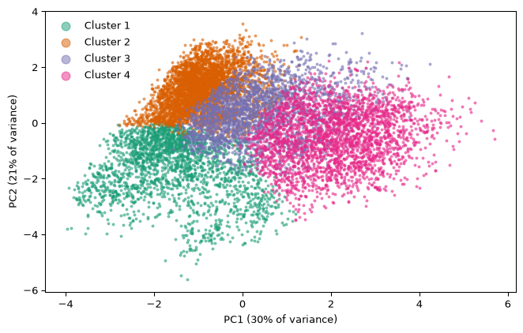
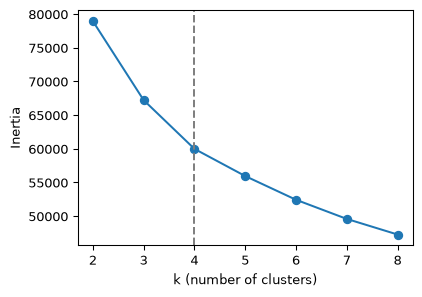
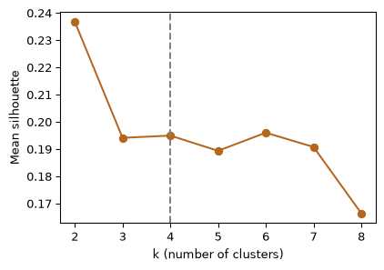
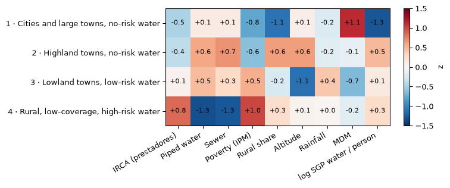
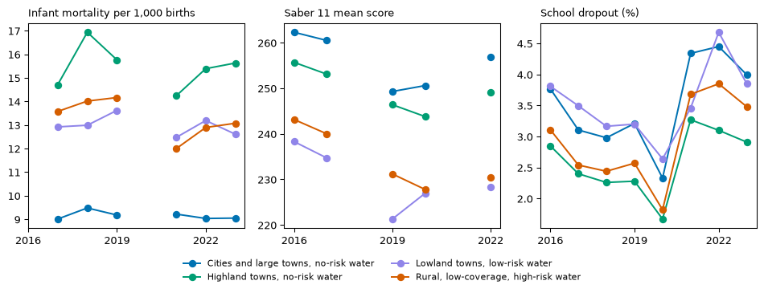
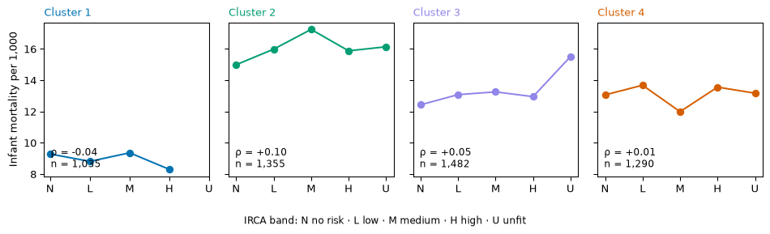

Kinds of municipal zone: k-means clusters
k-means on nine z-scored features (utility-supplied, prestadores IRCA; piped water and sewer coverage; poverty; rural share; altitude; rainfall; municipal performance; log SGP water transfers per person), 11,235 zone-years, 2016–2023. The analysis chose k = 4: k = 4: the next cluster cuts inertia by only 7% (< 10%), and its silhouette 0.195 is within 0.01 of the best k >= 3 (0.196).
Choosing k


A picture of the clusters
What sets each cluster apart?

Outcomes by cluster and year
Outcomes describe the clusters; they were never used to form them. These differences are descriptive and do not establish causal effects of water quality. Infant mortality is shown for 2017–2019 and 2021–2023 only; Saber 11 only in published years.

Worse water, more infant deaths? Within-cluster check

| cluster | kind | spearman_rho | n | municipalities |
|---|---|---|---|---|
| 1 | Cities and large towns, no-risk water | -0.04 | 1035 | 270 |
| 2 | Highland towns, no-risk water | 0.1 | 1355 | 475 |
| 3 | Lowland towns, low-risk water | 0.05 | 1482 | 425 |
| 4 | Rural, low-coverage, high-risk water | 0.01 | 1290 | 570 |
This comparison is descriptive: it does not establish a causal effect of water quality on infant mortality, because poverty, rurality, health-service access and reporting quality differ between places, and infant mortality is measured for the whole municipality while IRCA is measured per zone.